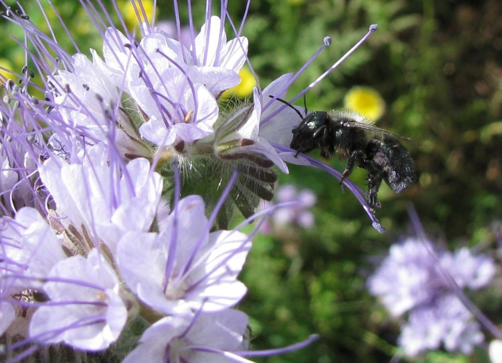
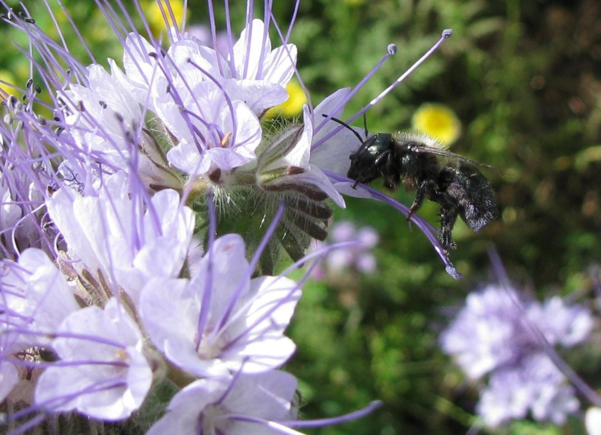
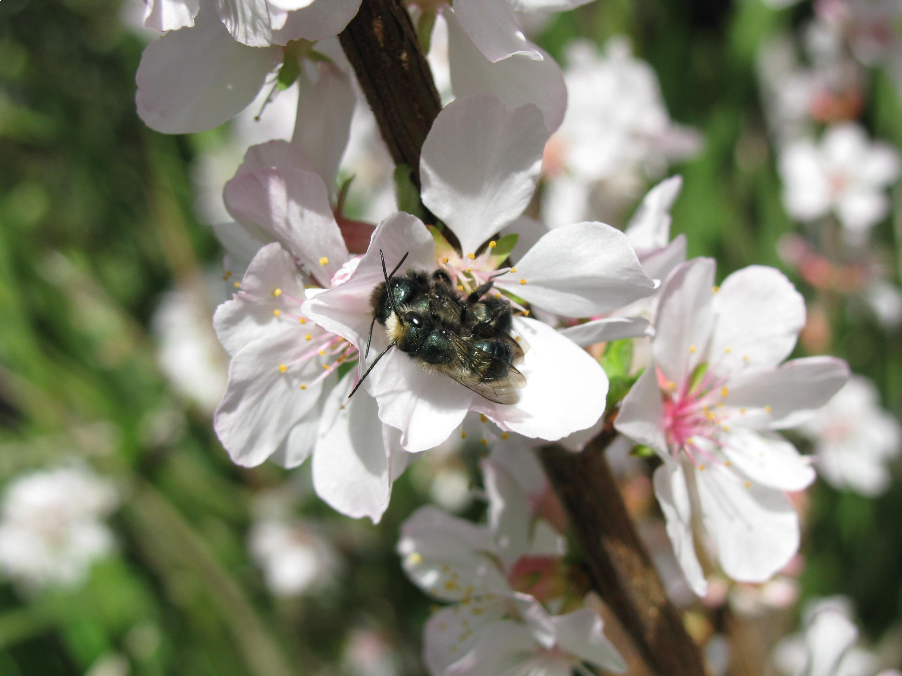

Blue Orchard Bees
 

The blue orchard bee or orchard mason bee (Osmia lignaria) is native to North America and can be managed to pollinate a wide range of crops. Almonds, cherries, plums, apples, pears, blackberries, raspberries, strawberries, gooseberries are some of the crops that the blue orchard bee pollinates with great efficiency. These bees will also visit and pollinate a wide variety of wildflowers (such as Phacelia, lupines, Chinese houses, baby blue eyes and meadowfoam to name a few) and native shrubs (for instance deerbrush, manzanita, mountain mahogany and western redbud). These bees are solitary which means they do not cooperatively raise their young. There are no queens or workers and they do not make honey or wax. Instead, each female bee builds its own nest in a cavity. In the wild, they look for beetle holes or cracks in wood. In the cavity they make individual compartments for their offspring separated by walls of mud, which is why they are also called mason bees. In each compartment the mother bee packs a supply of pollen and nectar that she lays an egg on. The egg hatches and the larvae will consume the food provision. The larva then pupates and transforms into an adult bee which will emerge the following spring. While they are not social, they often nest near other bees. The adult bees will fly and nest for up to six weeks in the early spring.

Nesting materials can be supplied by drilled holes in wood, paper tubes or grooved wooden boards. When the bees have finished nesting, the nests can be left in a cool shady location for the summer and then refrigerated in the fall. During the winter, it is a good practice to open the nests and remove any predators, parasites or dead larvae. They can then be brought out of refrigeration in the spring to emerge and begin the cycle again.
Foothill Bee Ranch is located in the foothills of the Sierra Nevada mountains in California and our bees are sourced locally. This means that our bees are adapted to California conditions and we will only sell to California growers and gardeners. We do not have bees for sale for the 2017 pollination season, but check back later about the 2018 season.